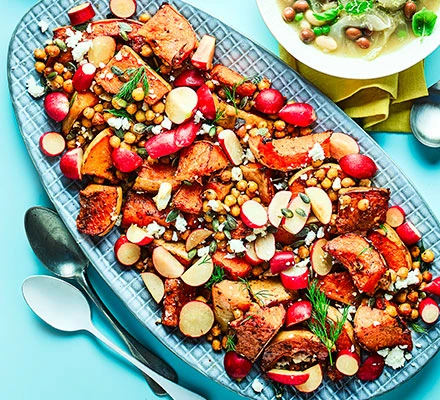

Odin Recipes: Butternut, Chickpea, Feta & Pickled Radish Salad
Home

A delicious non-lettuce based salad
This salad contains 16g protein per serving
Ingredients
- 2 tbsp olive oil
- 1 tbsp rose harissa(substitute tobasco or serracha
- 1 butternut squash: skin on, seeds removed, and cut in large wedges
- 2 x 400g can chickpeas; drained
- 2 tbsp sherry vinegar
- 200g mixed radishes; cut into pieces
- 80g feta
- 1 small pack dill, chopped
- 2 tbsp pumpkin seeds; toasted
- pinch of sugar
- Pinch of salt
- 1 tbsp water
Steps
- Oven: 200C(approx 390-400F), or Toaster oven 180C(350F).
Toss butternut squash in oil, harissa and some seasoning then roast 30 mins.
Add chickpeas, toss everything & roast additional 20 mins.
-
Heat vinegar in saucepan with sugar, salt, and water.
Bring to simmer, then remove from heat and add radishes.
Set aside.
-
Mix squash mixture with most of the feta and dill.
Top with radishes and their liquor.
Top with remaining feta, dill, and pumpkin seeds.